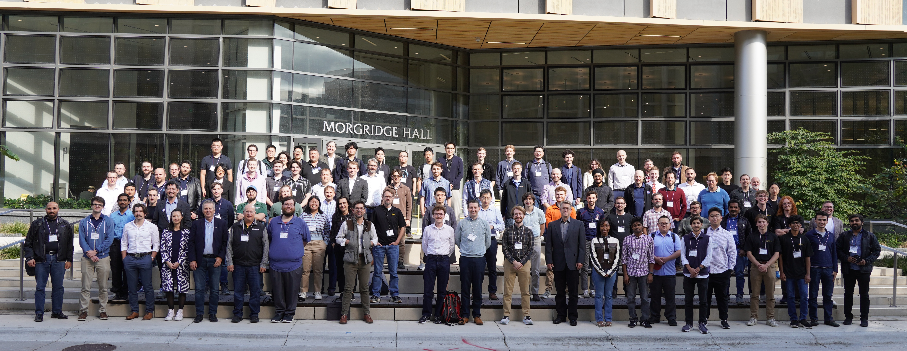
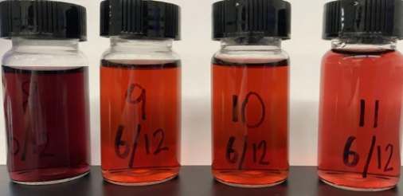

My research in the Robomechanics Lab, advised by Prof. Aaron Johnson, involves simulating robots in different environments, deploying policies and running hardware experiments, and designing robust learned controllers over complex, contact-rich natural environments.
Prior to CMU, I earned my Bachelors of Engineering in Mechanical Engineering from Stevens institute of Technology, where I worked in the PROOF Lab under Prof. Kishore Pochiraju. I'm originally from Queens, NYC and am currently based in Pittsburgh.
What I've been up to
-
Sep 2026
I attended the MaGIC 2026 (Machine-Ground Interaction Consortium) conference, where I presented a poster on my research on reduced order modeling for locomotion through deep mud. Conference Link

-
May 2026
I met Jensen Huang, the founder and CEO of NVIDIA, at Carnegie Mellon's pre-commencement and had the opportunity to share how I am utilizing Nvidia Omniverse in my research. CMU News

-
May 2026
My research on training adaptive policies for quadruped robots to traverse muddy terrain, conducted in collaboration with FieldAI, was featured in a CMU Engineering article. CMU Engineering

Selected projects

SLAM and FSD for a Tesla Model 3
PID, LQR and MPC controllers compared in Webots, with A* replanning and EKF SLAM.

Pick and Place Camera Algorithm
YOLOv8 model driving a Doosan H2515 arm over a TCP client-server link.

LeRobot Hackathon — SO-100
Filtering and frame skipping doubled task speed. Won Most Innovative Use of Data.

Resolved Rates and Manipulation
Null-space projection and min-norm pseudoinverse redundancy resolution in MATLAB.

SLAM and RRT Planning
Sampling-based planning with Kalman-filtered uncertainty along the trajectory.

Extracurricular work
Gold nanoparticle research, woodworking, machining, and other ventures.